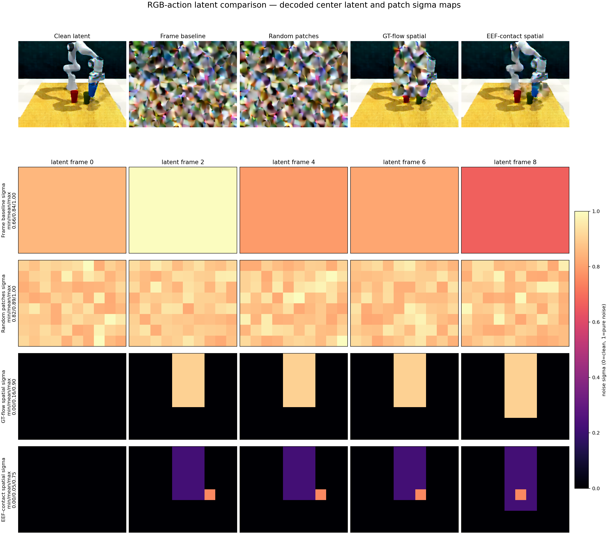

Frame baseline · step800
1 / 10 success
Open episode 0 comparisonSelect a model, checkpoint step, and RLBench task to inspect success rate, task prompt, summary files, and saved closed-loop rollout videos.
| Setting | Checkpoint | Success | Rate |
|---|---|---|---|
| Frame baseline | step800 | 1 / 10 | 10% |
| Random patches | step800 | 0 / 10 | 0% |
| GT-flow spatial | step1150 | 0 / 10 | 0% |
| EEF-contact spatial | step950 | 0 / 10 | 0% |
1 / 10 success
Open episode 0 comparison0 / 10 success
Open episode 0 comparison0 / 10 success
Open episode 0 comparison0 / 10 success
Open episode 0 comparison
Latent-noise pattern overview used for the four matched experiments.
RDF-MF tests whether a more reliable visual modality should advance first at each reverse-diffusion step, then condition the other modalities. The fixed-leader sampler uses two forwards per visual step and commits only the final visual state to KV cache. The current training run uses fully independent modality timesteps; it is not the proposed 40% shared + 20% per-leader mixture.
| Checkpoint / inference | Success | RGB PSNR ↑ | Depth δ1 ↑ | Depth RMSE ↓ | Flow EPE ↓ | Moving Flow EPE ↓ |
|---|---|---|---|---|---|---|
step1700 · shared | 2 / 10 | 25.12 dB | 0.989 | 13.53 m outlier-sensitive | 0.19 px | 1.60 px |
Depth δ1 is stable, while metric RMSE remains dominated by rare decoded-depth outliers. Do not interpret the RMSE as typical scene-scale error.
| Matched step1700 strategy | Slurm job | Status at dashboard update | Planned output |
|---|---|---|---|
shared | 36396829 | running | 10 seeds + RGB/Depth/Flow videos |
rgb_first | 36396845 | queued | 10 seeds + RGB/Depth/Flow videos |
depth_first | 36396843 | queued | 10 seeds + RGB/Depth/Flow videos |
flow_first | 36396844 | queued | 10 seeds + RGB/Depth/Flow videos |
Run correction: the first step1000 matrix acquired GPUs only after the continuous watcher had deleted that old checkpoint. Those jobs exited before model loading and produced no model result. The active matrix uses an independently retained step1700 Transformer snapshot.
SUCCESS · RGB / Depth / Flow GT, prediction, and error heatmaps
Open comparison videoSUCCESS · second successful rollout
Open comparison videoFAILURE · representative unsuccessful rollout
Open comparison videoLines include only completed 10-seed evaluations. Partial evaluations remain in the table and are not connected into the curves.
| Setting | Latest complete | Best complete | Current status |
|---|---|---|---|
| Dense decoded UV · 2-node | step3300: 5/10 |
step2100: 7/10 |
step3400: 5/7partial |
| Dense decoded UV · 2-card | step1100: 2/10 |
2/10 at steps 700, 800, 1000, and 1100 |
step1400 rollout running after watcher recovery |
| Pred flow ↔ pred action · 2-card | step500: 0/10 |
0/10 through step500 |
Complete through step500 |
| Pred flow ↔ pred action · 2-node | None yet | None yet | step100: 0/8partial; training has reached step200 |
| Local gripper flow-action alignment · 2-node | step2000: 3/10 |
step2000: 3/10 |
Latest completed local-alignment checkpoint |
Current readout: direct dense decoded-flow supervision shows the strongest signal, peaking at 70%, while the new predicted-flow/predicted-action consistency loss has not yet produced a successful rollout.
| Model | Task | Prompt | Checkpoint / Eval Step | Status | Success | Rate |
|---|